Politikwissenschaftliche Statistik mit R. Sitzung 7: Bivariate lineare Regression
Christoph Garwe, Philipp Meyer, Laura Brune, Timor Othersen und Christoph Hönnige
Institut für Politikwissenschaft, Leibniz Universität Hannover1 Einleitung
Nachdem wir uns in der letzten Sitzung symmetrischen Beziehungen gewidmet haben, wollen wir uns in der heutigen Sitzung mit bivariaten linearen Regressionen (OLS) auseinandersetzen. Die Grundidee ist, dass wir durch die x-Werte (unabhängige Variable) eines Falls dessen y-Werte (abhängige Variable) vorhersagen können. Wie gut unser Modell die y-Werte voraussagt, können wir mithilfe von \(r^2\) quantifizieren. Die OLS nimmt an, dass sich die abhängige Variable als lineare Funktion einer unabhängigen Variable beschreiben lässt. Eine Veränderung um eine Einheit der unabhängigen Variable führt also zu einer Veränderung der abhängigen Variable um den Wert des Steigungskoeffizienten. Im Folgenden führen wir eine bivariate lineare Regression durch und berechnen beispielhaft den Zusammenhang zwischen der effektiven Parteienanzahl (ENP) und dem Gallagher-Index.
2. Datensätze laden und umkodieren
getwd()
setwd("eigener Pfad")library(foreign)
gles <- read.spss(file = "ZA6801_de_v4-0-1.sav", to.data.frame = TRUE)
lijphart <- read.csv2("Lijphart_Data_recode.csv")# Lijphart
# ENPP
lijphart$enpp4510 <- as.numeric(lijphart$enpp4510)
# Gallagher-Index
lijphart$disprop4510 <- as.numeric(lijphart$disprop4510)
# Bikameralismus-Index
lijphart$bicam4510 <- as.numeric(lijphart$bicam4510)
# Minimal-Gewinn-Koalition mit einer Partei
lijphart$minwin_one_part4510 <- as.numeric(lijphart$minwin_one_part4510)
# Exekutivdominanz (Kabinettsdauer)
lijphart$exe_dom4510 <- as.numeric(lijphart$exe_dom4510)3 Durchführung einer bivariaten linearen Regression
Um eine bivariate lineare Regression durchzuführen, verwenden wir die
Funktion lm() (kurz für linear model). Wir müssen die
abhängige Variable, die unabhängige Variable und den Datensatz angeben.
In unserem Beispiel geben wir enpp4510 als abhängige
Variable und disprop4510 als unabhängige Variable an und
beziehen diese Variablen aus dem Datensatz lijphart. In
einer OLS wird die abhängige Variable als lineare Funktion der
unabhängigen Variable angenommen. Zur Berechnung einer solchen Funktion
nutzen wir das tilde-Symbol ~ (Alt + N oder
Option + N). Die Regressionsergebnisse speichern wir in dem
Objekt lm_lijphart.
lm_lijphart <- lm(enpp4510 ~ disprop4510, data = lijphart)Wenn wir lm_lijphart eingeben, werden uns der Intercept
(der Schnittpunkt der Regressionsgeraden mit der y-Achse) und die
Koeffizienten des Modells ausgegeben.
lm_lijphart##
## Call:
## lm(formula = enpp4510 ~ disprop4510, data = lijphart)
##
## Coefficients:
## (Intercept) disprop4510
## 4.0921 -0.1054Wir sehen hier, dass der Intercept 4.092 beträgt und der Koeffizient mit -0.105 angegeben wird. Steigt der Wert des Gallagher-Index um eine Einheit, wird das Wahlsystem also disproportionaler, d.h. der ENP-Wert verändert sich um -0.105. Wir stellen hier also einen negativen Zusammenhang zwischen der Parteienanzahl und der Wahlsystemdisproportionalität fest, der sich mit den Ergebnissen von Lijphart deckt. Die Regressionsgleichung für unser Beispiel lautet:
\(y_i = 4.092 – 0.150 * x_i\)
Auf Grundlage des Regressionsmodells können wir nun für bestimmte Ausprägungen von x Werte für y vorhersagen. In dieser Sitzung machen wir das noch händisch über die Konsole, ab der nächsten Sitzung mit einem neuen Befehl. Für eine Demokratie mit einem Gallagher-Index von 3.480 wie Deutschland im Jahr 2021 würde unser Modell eine effektive Parteienzahl von 3.57 vorhersagen:
\(\hat{y}_i= 4.092 – 0.150 * 3.480 = 3.570\)
Intercept und Koeffizient allein reichen aber nicht aus, um die
Ergebnisse der linearen Regression vollständig zu beurteilen. Hierfür
benötigen wir zusätzlich Informationen über den Standardfehler, den
p-Wert und weitere Modellstatistiken. Diese Informationen erhalten wir,
wenn wir die summary()-Funktion auf unser Objekt mit der
linearen Regression (lm_lijphart) anwenden.
summary(lm_lijphart)##
## Call:
## lm(formula = enpp4510 ~ disprop4510, data = lijphart)
##
## Residuals:
## Min 1Q Median 3Q Max
## -1.8840 -0.7336 -0.2241 0.9471 1.7194
##
## Coefficients:
## Estimate Std. Error t value Pr(>|t|)
## (Intercept) 4.09206 0.27417 14.925 < 2e-16 ***
## disprop4510 -0.10536 0.02619 -4.023 0.000303 ***
## ---
## Signif. codes: 0 '***' 0.001 '**' 0.01 '*' 0.05 '.' 0.1 ' ' 1
##
## Residual standard error: 0.9503 on 34 degrees of freedom
## Multiple R-squared: 0.3225, Adjusted R-squared: 0.3026
## F-statistic: 16.19 on 1 and 34 DF, p-value: 0.000303Wir sehen hier, dass die Schätzung für disprop4510
negativ und statistisch signifikant ist. Wir können also davon ausgehen,
dass der Effekt des Gallagher-Index auf die effektive Parteienzahl in
der Grundgesamtheit von Null verschieden ist. Je disproportionaler ein
Wahlsystem ist, desto niedriger ist die effektive Zahl der Parteien.
Weiterhin sehen wir, dass \(R^2\) 0.30
beträgt. Das bedeutet, dass 30 % der Varianz der Parteienzahl durch die
unabhängige Variable erklärt wird.
Mit diesen wenigen Code-Zeilen haben wir eine bivariate lineare
Regression berechnet und uns die Ergebnisse anzeigen lassen. Im Grunde
können wir mit dem oben gezeigten Code alle notwendigen Informationen
für unsere Analyse generieren. Mittels ein paar zusätzlicher Operationen
lassen sich die Modellkomponenten einzeln speichern und für weitere
Analyseschritte wie z.B. eine Visualisierung nutzen. Zuerst nutzen wir
das Paket broom und die tidy-Funktion und
konvertieren das Modell in einen Datensatz, in dem wir unsere
Modellschätzungen und Teststatistiken speichern. Die
tidy-Funktion fasst Informationen über
Regressionsmodellkomponenten zusammen. Wir speichern den neuen Datensatz
in dem Objekt lm_fit_lijphart:
library(broom)
lm_fit_lijphart <- tidy(lm_lijphart)
lm_fit_lijphart## # A tibble: 2 x 5
## term estimate std.error statistic p.value
## <chr> <dbl> <dbl> <dbl> <dbl>
## 1 (Intercept) 4.09 0.274 14.9 1.72e-16
## 2 disprop4510 -0.105 0.0262 -4.02 3.03e- 4Die Konfidenzintervalle extrahieren wir mit conf.int = TRUE. Konfidenzintervalle geben Auskunft über die Präzision des Modells.
lm_fit_lijphart <- tidy(lm_lijphart, conf.int = TRUE)
lm_fit_lijphart## # A tibble: 2 x 7
## term estimate std.error statistic p.value conf.low conf.high
## <chr> <dbl> <dbl> <dbl> <dbl> <dbl> <dbl>
## 1 (Intercept) 4.09 0.274 14.9 1.72e-16 3.53 4.65
## 2 disprop4510 -0.105 0.0262 -4.02 3.03e- 4 -0.159 -0.0521Die Maße zur Interpretation der Modellgüte, wie z.B. \(R^2\), können wir mittels der
glance-Funktion in ein zusätzliches Objekt speichern.
lm_glance_lijphart <- glance(lm_lijphart)
lm_glance_lijphart## # A tibble: 1 x 12
## r.squared adj.r.squared sigma statistic p.value df logLik AIC BIC deviance df.residual nobs
## <dbl> <dbl> <dbl> <dbl> <dbl> <dbl> <dbl> <dbl> <dbl> <dbl> <int> <int>
## 1 0.323 0.303 0.950 16.2 0.000303 1 -48.2 102. 107. 30.7 34 36Zusätzlich können wir auch Modellvorhersagen und Residuen speichern.
Diese Metriken helfen uns dabei, die Modellgüte zu beurteilen. Sind die
Residuen eines Regressionsmodells nicht normalverteilt (das können wir
in einem ersten Schritt mit einem Histogramm grafisch prüfen), dann
müssen wir davon ausgehen, dass die Modellergebnisse verzerrt sind. Wir
speichern die Modellvorhersagen und Residuen mit der
augment()-Funktion und speichern die Informationen in dem
neuen Objekt lm_aug_lijphart.
lm_aug_lijphart <- augment(lm_lijphart)
lm_aug_lijphart## # A tibble: 36 x 8
## enpp4510 disprop4510 .fitted .resid .hat .sigma .cooksd .std.resid
## <dbl> <dbl> <dbl> <dbl> <dbl> <dbl> <dbl> <dbl>
## 1 3.15 18.0 2.20 0.952 0.0954 0.949 0.0585 1.05
## 2 2.22 9.44 3.10 -0.877 0.0284 0.952 0.0128 -0.937
## 3 2.68 2.51 3.83 -1.15 0.0554 0.942 0.0453 -1.24
## 4 1.69 16.5 2.36 -0.666 0.0756 0.957 0.0217 -0.729
## 5 1.68 17.3 2.27 -0.593 0.0856 0.958 0.0199 -0.652
## 6 4.72 3.35 3.74 0.981 0.0483 0.949 0.0284 1.06
## 7 1.38 14.6 2.55 -1.17 0.0557 0.941 0.0476 -1.27
## 8 2.52 11.6 2.87 -0.354 0.0347 0.962 0.00258 -0.379
## 9 2.67 14.4 2.58 0.0930 0.0536 0.964 0.000287 0.101
## 10 4.57 1.71 3.91 0.658 0.0633 0.957 0.0173 0.716
## # ... with 26 more rowsDiesen neuen Datensatz können wir zur Visualisierung der linearen
Regression und der Residuen, die wir mit rot hervorheben, nutzen. Die
Visualisierung realisieren wir mit dem ggplot2-Paket, das
wir bereits grundlegend kennengelernt haben und auch noch genauer
kennenlernen werden.
library(ggplot2)
ggplot(lm_aug_lijphart, aes(x = disprop4510, y = enpp4510)) +
geom_segment(aes(xend = disprop4510, y = enpp4510, yend = .fitted),
colour = "red") +
geom_point() +
geom_line(aes(x = disprop4510, y = .fitted)) +
xlab("Disproportionalität des Wahlsystems (Gallagher-Index)") + ylab("Effektive Parteienanzahl (ENP)")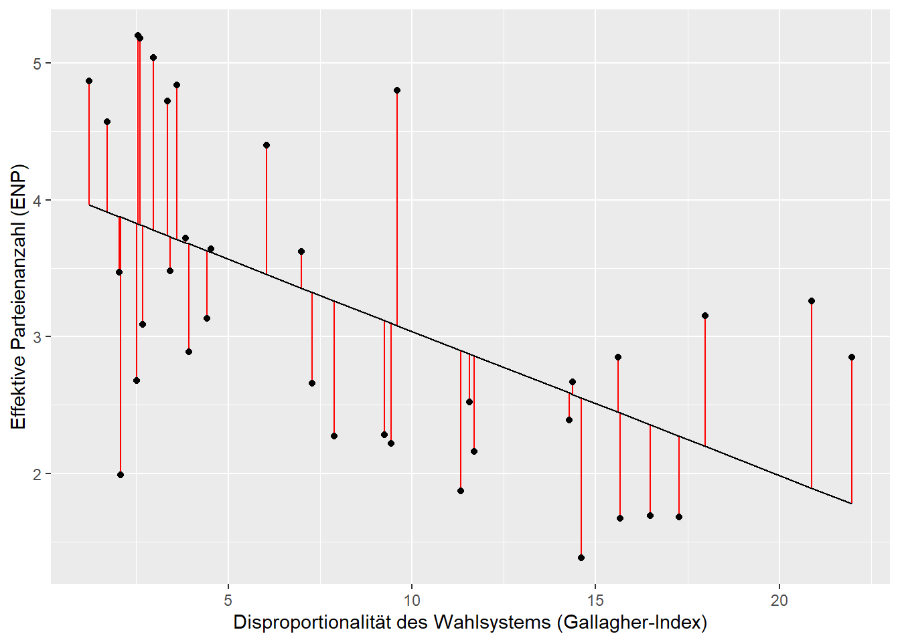
4 Visualisierung
Zusammenhänge lassen sich mit vielen unterschiedlichen Graphen
präsentieren. Zwei dieser Möglichkeiten werden wir im Folgenden
besprechen: Streudiagramme und Linienplots. Für die Darstellung von
Zusammenhängen werden wir vor allem die ggplot()-Funktion
und geom_point() aus dem Paket ggplot2
verwenden. Zur Erinnerung: Die Grafiken von ggplot2
bestehen aus Schichten, welche mit Visualisierungselementen, den geoms
gestaltet werden. Mit dem ersten Argument wird der Datensatz definiert.
Das zweite Argument mapping legt mit Hilfe von
aes() fest, welche Daten genutzt werden. Wie bereits oben
erwähnt, werden wir unsere Visualisierungen mit den Variablen
enpp4510 und disprop4510 durchführen.
4.1 Streudiagramme
Wollen wir den Zusammenhang zwischen der effektiven Parteienanzahl
und der Wahlsystemdisproportionalität darstellen, dann bietet sich ein
Streudiagramm an. Hierfür verwenden wir die Funktion
geom_point().
ggplot(lijphart, aes(x = enpp4510, y = disprop4510)) +
geom_point()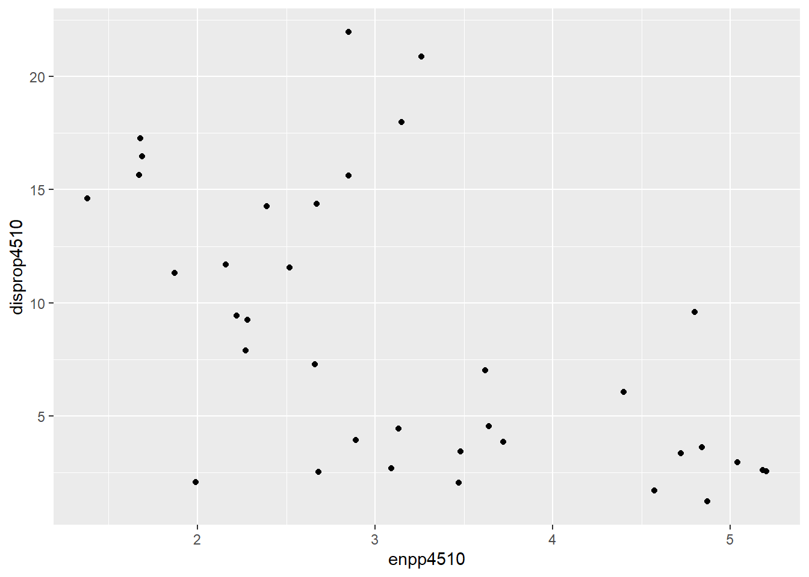
Wollen wir wissen, welche Länder sich hinter den Punkten verstecken,
dann können wir mittels geom_text() und der Variable
Country ganz einfach Beschriftungen hinzufügen:
ggplot(lijphart, aes(x = enpp4510, y = disprop4510)) +
geom_point() +
geom_text(label = lijphart$Country)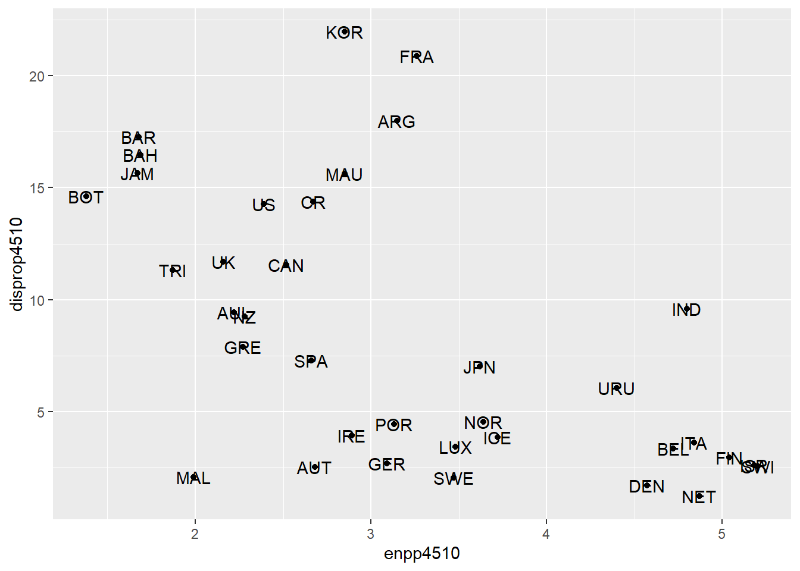
4.2 Linienplots
Die Aussagekraft lässt sich noch erweitern, wenn wir eine
Regressionslinie hinzufügen. Zur kurzen Erinnerung: In Sitzung 7 haben
wir eine bivariate Regression zwischen der ENPP und dem Gallagher-Index
gerechnet und herausgefunden, dass beide Variablen signifikant negativ
zusammenhängen. Um das auch grafisch darzustellen, nutzen wir die
Funktion geom_smooth() und bestimmen mit method = lm, dass
wir eine lineare Regressionsgerade visualisieren wollen.
ggplot(lijphart, aes(x = enpp4510, y = disprop4510)) +
geom_point() +
geom_smooth(method = lm)## `geom_smooth()` using formula 'y ~ x'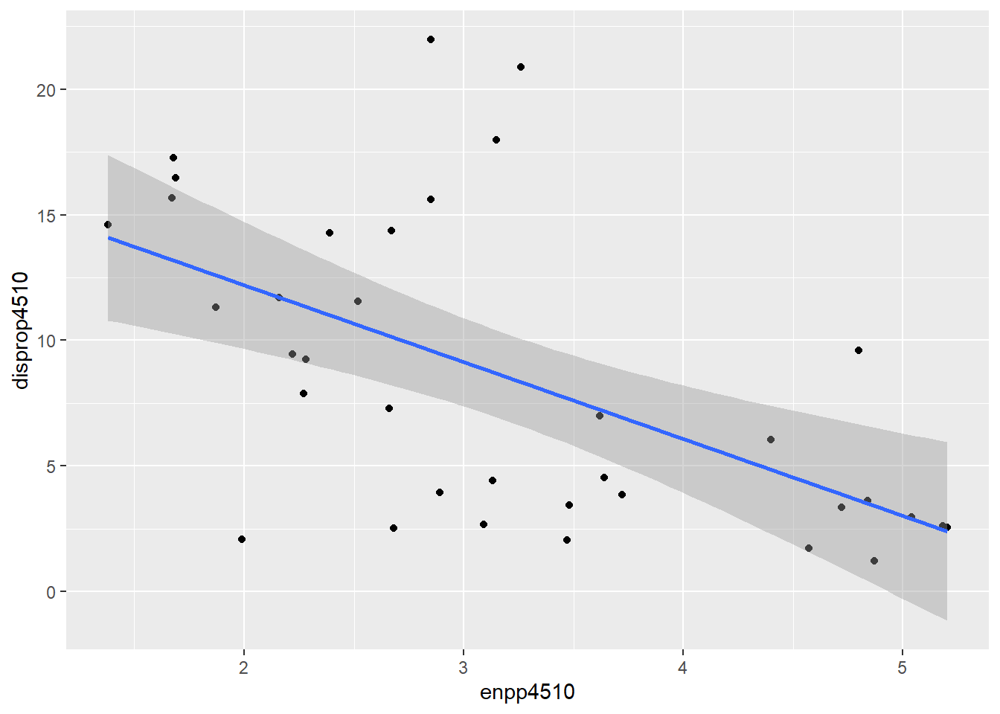
# Eine alternative Schreibweise bietet das Tilde (~) Zeichen, welches wir bereits aus dem Tutorial zur bivariaten OLS Regression kennen
# ggplot(lijphart, aes(enpp4510 ~ disprop4510)) +
# geom_point() +
# geom_smooth(method = lm)Wie wir sehen können, werden die Konfidenzintervalle automatisch visualisiert. Wollen wir das nicht, dann können wir das wie folgt bestimmen:
ggplot(lijphart, aes(x = enpp4510, y = disprop4510)) +
geom_point() +
geom_smooth(method = lm, se = FALSE)## `geom_smooth()` using formula 'y ~ x'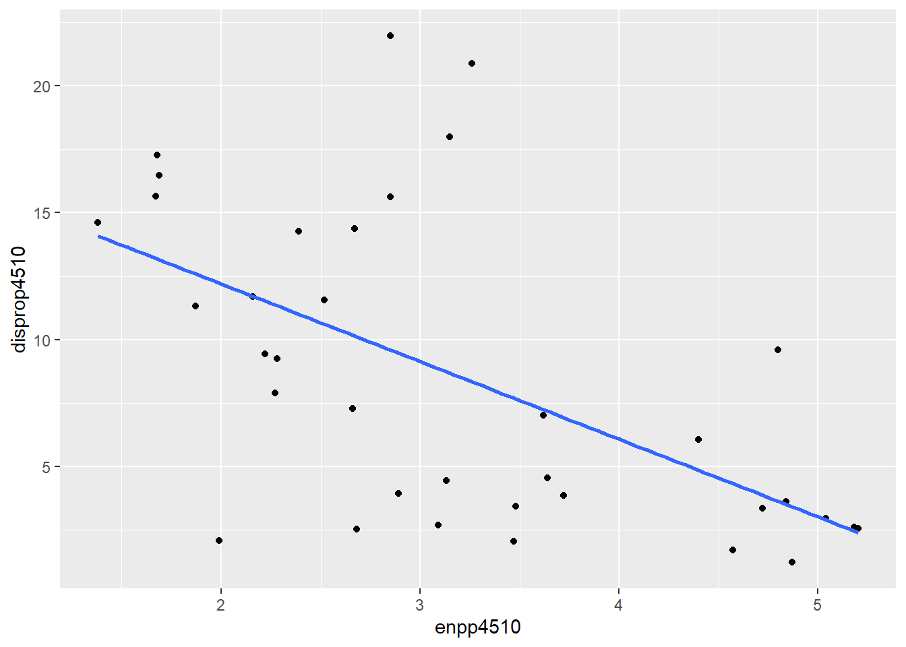
In einem letzten Schritt beschriften wir die Punkte mit den
dazugehörigen Ländernamen. Hierfür verwenden wir wieder die Funktion
geom_text() und die Variable Country,
zusätzlich passen wir mit hjust und vjust die Platzierung der
Beschriftungen an und garantieren so eine bessere Lesbarkeit:
ggplot(lijphart, aes(x = enpp4510, y = disprop4510)) +
geom_point() +
geom_smooth(method = lm) +
geom_text(label = lijphart$Country, hjust = 0, vjust = 0)## `geom_smooth()` using formula 'y ~ x'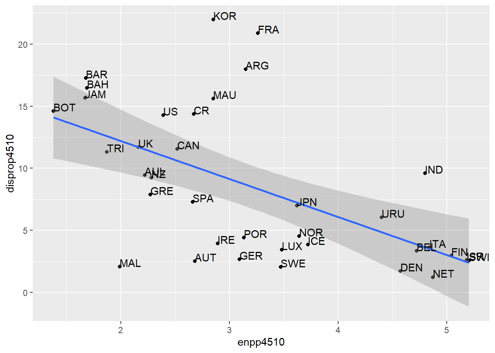
5 Graphen verändern
Wollen wir das Aussehen unserer Graphen verändern, dann bietet uns
ggplot2 zahlreiche Möglichkeiten. Einige davon werden in
den folgenden Unterkapitels präsentiert, andere finden Sie mittels der
help-Funktion ? oder aber über die ggplot2-Homepage.
5.1 Skalierung der Achsen
Mit ggplot können wir die Skalierung der Achsen
anpassen. Für die Skalierung der x-Achse kann die Funktion
xlim() verwendet werden. Hierbei wird der
Definitionsbereich durch die Benennung des Anfangswertes und des
Endwertes bestimmt. Die Werte werden dabei mit einem Komma getrennt.
ggplot(lijphart, aes(x = enpp4510, y = disprop4510)) +
geom_point() +
geom_smooth(method = lm) +
geom_text(label = lijphart$Country, hjust = 0, vjust = 0) +
xlim(0,7)## `geom_smooth()` using formula 'y ~ x'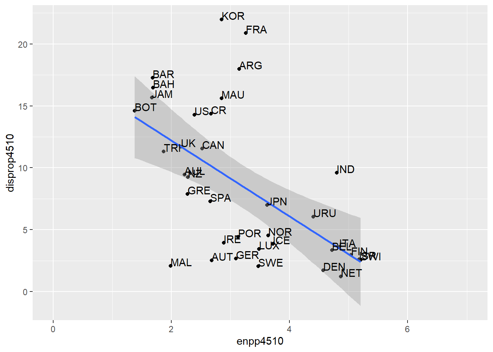
Das Prinzip ist analog für die y-Achse anwendbar.
ggplot(lijphart, aes(x = enpp4510, y = disprop4510)) +
geom_point() +
geom_smooth(method = lm) +
geom_text(label = lijphart$Country, hjust = 0, vjust = 0) +
ylim(0,30)## `geom_smooth()` using formula 'y ~ x'
Um die Skalierung der Achsen noch genauer bestimmen zu können, kann
die Funktion scale_x_continuous() bzw.
scale_y_continuous() genutzt werden (s. Sitzung 5).
ggplot(lijphart, aes(x = enpp4510, y = disprop4510)) +
geom_point() +
geom_smooth(method = lm) +
geom_text(label = lijphart$Country, hjust = 0, vjust = 0) +
ylim(0,30)## `geom_smooth()` using formula 'y ~ x'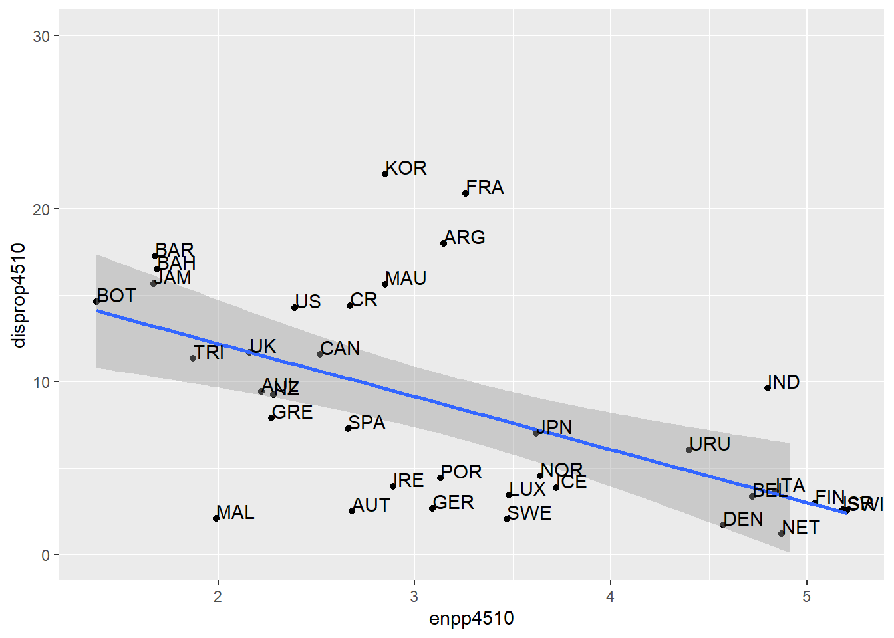
5.2 Beschriftungen
ggplot2 macht die Benennung eines Graphen sehr einfach.
Hierfür verwenden wir die Funktion labs() und setzen unsere
gewünschte Beschriftung in Anführungszeichen:
ggplot(lijphart, aes(x = enpp4510, y = disprop4510)) +
geom_point() +
geom_smooth(method = lm) +
geom_text(label = lijphart$Country, hjust = 0, vjust = 0) +
labs(title = "Zusammenhang zwischen ENPP und Gallagher-Index",
x ="Effektive Parteienanzahl", y = "Disproportionalität von Wahlsystemen")## `geom_smooth()` using formula 'y ~ x'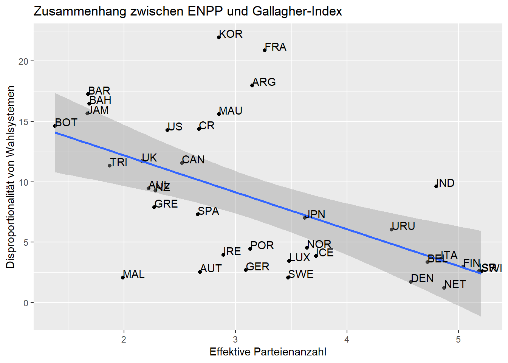
5.3 Hintergrund-Themes
ggplot2 bietet unterschiedliche Hintergrund-Themes an. Zusätzlich bietet das Paket ggthemes weitere Möglichkeiten. Die folgende Tabelle bietet einen kleinen Überblick über mögliche Themes.
| Funktion | Paket | Beschreibung |
|---|---|---|
| theme_bw() | ggplot2 | Schwarze Elemente auf weißem Hintergrund |
| theme_minimal() | ggplot2 | Minimalistisch |
| theme_classic() | ggplot2 | Theme ohne grid Linien |
| theme_base() | ggthemes | Basis Theme |
| theme_economist() | ggthemes | The Economist Theme |
| theme_fivethirtyeight() | ggthemes | FiveThirtyEight Theme |
| theme_tufte() | ggthemes | Tufte (1983) theme |
Die Veränderung des Hintergrunds ist denkbar einfach. Hierfür müssen wir einfach die jeweilige Theme-Funktion verwenden:
ggplot(lijphart, aes(x = enpp4510, y = disprop4510)) +
geom_point() +
geom_smooth(method = lm) +
geom_text(label = lijphart$Country, hjust = 0, vjust = 0) +
labs(title = "Zusammenhang zwischen ENPP und Gallagher-Index"
, x ="Effektive Parteienanzahl"
, y = "Disproportionalität von Wahlsystemen") +
theme_minimal()## `geom_smooth()` using formula 'y ~ x'# The Economist
library(ggthemes) # für dieses Theme brauchen wir ein weiteres Paket
ggplot(lijphart, aes(x = enpp4510, y = disprop4510)) +
geom_point() +
geom_smooth(method = lm) +
geom_text(label = lijphart$Country, hjust = 0, vjust = 0) +
labs(title = "Zusammenhang zwischen ENPP und Gallagher-Index"
, x ="Effektive Parteienanzahl"
, y = "Disproportionalität von Wahlsystemen") +
theme_economist() ## `geom_smooth()` using formula 'y ~ x'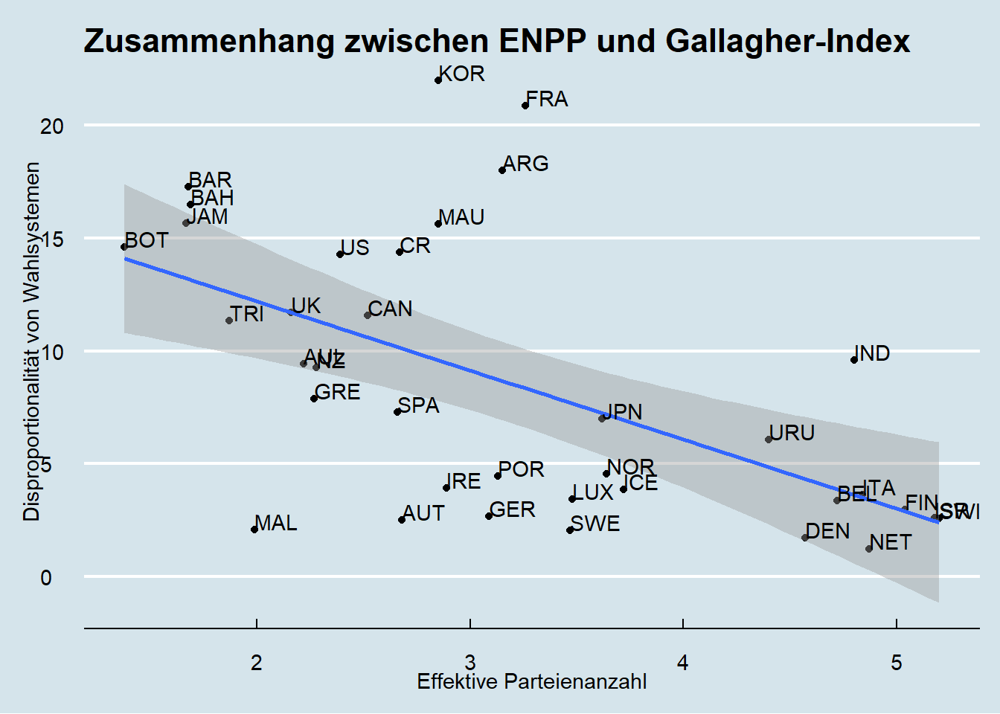
5.4 Farben
Wenn wir die Farben der Datenpunkte verändern wollen, dann müssen wir
lediglich das Argument color in die geom_point() Funktion
einbauen. Gleiches gilt für die Form der Punkte, wobei wir hier das
Argument shape verwenden (die einzelnen Formen können über die Ziffern
1-20 ausgewählt werden):
ggplot(lijphart, aes(x = enpp4510, y = disprop4510)) +
geom_point(shape = 18, color = "blue") + # Form und Farbe der Punkte verändern
geom_smooth(method = lm) +
geom_text(label = lijphart$Country, hjust = 0, vjust = 0) +
labs(title = "Zusammenhang zwischen ENPP und Gallagher-Index"
, x ="Effektive Parteienanzahl"
, y = "Disproportionalität von Wahlsystemen") +
theme_minimal() ## `geom_smooth()` using formula 'y ~ x'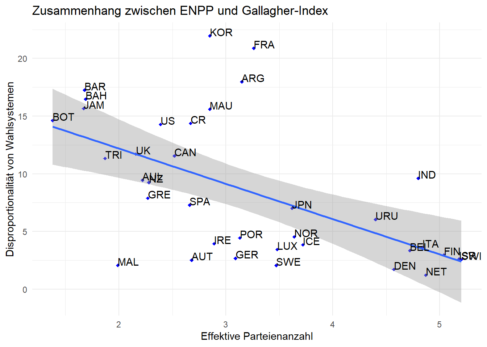
Die Schritte sind ähnlich, wenn wir die Form, Farbe und Füllung unsere Regressionslinie verändern möchten:
ggplot(lijphart, aes(x = enpp4510, y = disprop4510)) +
geom_point(shape = 18, color = "blue") +
geom_smooth(method = lm, linetype = "dashed",
color = "darkred", fill = "blue") + # Form und Aussehen der Regressionslinie und Füllung der Konfidenzintervalle verändern
geom_text(label = lijphart$Country, hjust = 0, vjust = 0) +
labs(title = "Zusammenhang zwischen ENPP und Gallagher-Index"
, x ="Effektive Parteienanzahl"
, y = "Disproportionalität von Wahlsystemen") +
theme_minimal()## `geom_smooth()` using formula 'y ~ x'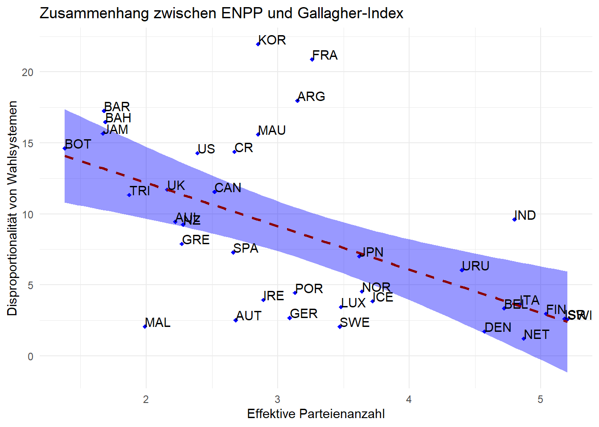
5.5 Einen Plot speichern
Wenn wir einen Plot erstellt haben, den wir speichern möchten, können
wir die Funktion ggsave() verwenden. Die Benennung der
Datei bestimmen wir, indem wir Anführungszeichen verwenden. Dabei wird
nur die zuletzt erstellte Darstellung gespeichert. Die gespeicherte
Darstellung wird in dem Ordner gespeichert, den wir zuvor mit
setwd() festgelegt haben.
ggsave("fig1-ENPP_Gallagher.png")## Saving 7 x 5 in image## `geom_smooth()` using formula 'y ~ x'Die Abbildung wird in Ihrem Arbeitsverzeichnis gespeichert. Der Dateityp .png kann durch ein beliebiges Format (z.B. .jpg) ersetzt werden.
Haben wir unsere Abbildungen in einem Objekt gespeichert, können wir die Graphen speichern, indem wir den Objektnamen vor dem Dateinamen angeben. Dieses Vorgehen hat vor allem bei vielen Graphen Vorteile, da wir so effizient einzelne Visualisierungen ansteuern können.
# Graph wird im Objekt "ENPP_Gallagher" gespeichert:
ENPP_Gallagher <- ggplot(lijphart, aes(x = enpp4510, y = disprop4510)) +
geom_point(shape = 18, color = "blue") +
geom_smooth(method = lm, linetype = "dashed",
color = "darkred", fill = "blue") + # Form und Aussehen der Regressionslinie und Füllung der Konfidenzintervalle verändern
geom_text(data = lijphart, aes(label = Country), hjust = 0, vjust = 0) +
labs(title = "Zusammenhang zwischen ENPP und Gallagher-Index"
, x ="Effektive Parteienanzahl"
, y = "Disproportionalität von Wahlsystemen") +
theme_minimal()
# Den Graphen als Datei in unserem Arbeitsverzeichnis speichern
ggsave(plot = ENPP_Gallagher, filename = "fig1-ENPP_Gallagher.png", device = "png")## Saving 7 x 5 in image## `geom_smooth()` using formula 'y ~ x'Sie werden feststellen, dass Sie gelegentlich mit der Größe Ihres Graphs nicht ganz zufrieden sind. Um das zu ändern, können wir die Breite und Höhe der zu speichernden Graphen verändern:
ggsave(plot = ENPP_Gallagher, "fig1-ENPP_Gallagher.png", device = "png", width = 4, height = 4)## `geom_smooth()` using formula 'y ~ x'Alternativ kann, ohne dabei aber Anpassungen der Größe o.ä. vornehmen zu können, die Grafik über Plots -> Export gespeichert werden.
6 Übungsaufgaben
- Untersuchen Sie den Zusammenhang zwischen dem Kabinettstyp (bicam4510) und der Regierungsdauer (exe_dom4510). Berechnen Sie Korrelationsmaße und eine bivariate lineare Regression.
- Visualisieren Sie die in Aufgabe 1 berechnete Regression mithilfe des Pakets ggplot2. Verwenden Sie dabei andere Hintergrund-Themes als die gezeigten.
- Interpretieren Sie Korrelationskoeffizient, Effektstärke, die Regressionskoeffizienten und Determinationskoeffizient des in Aufgabe 1 berechneten Modells.